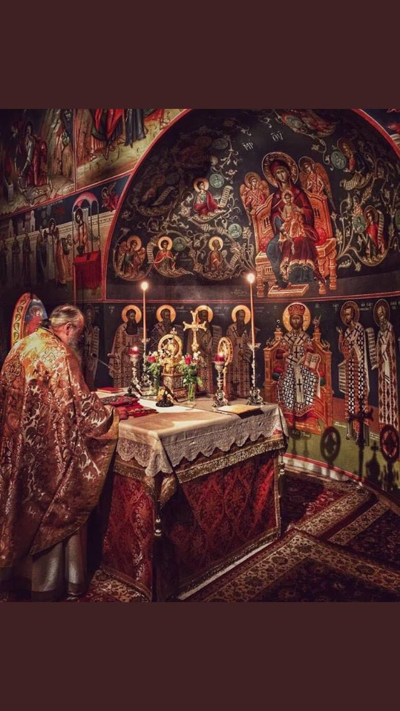

Liturgy
Divine Liturgy and continuity with biblical worship.
The Divine Liturgy is the Church’s heart, where heaven and earth meet in thanksgiving. In the first part, the faithful hear the Scriptures and offer prayers; in the second, they approach the holy table as the bread and wine become the Body and Blood of Christ. The service envelops the senses with chant, incense, and iconography to teach and to inspire repentance. Its goal is communion—union with God that renews the person and the community.
Participation in the Liturgy is an active vocation rather than a passive observation. The people respond with psalms and hymns, bow in reverence, and receive Holy Communion as the culmination of their preparation. The clergy serve not as performers but as ministers on behalf of the gathered Church. Through this shared offering, the whole Body of Christ is built up in love.
Structure of the Divine Liturgy
The Liturgy begins with litanies and psalms that lift the heart to God and prepare the assembly to hear the word. The readings from the Epistle and Gospel proclaim Christ among His people, and the homily applies the word to life. In the Liturgy of the Faithful, bread and wine are offered and the anaphora gives thanks to the Father, recalling salvation history. The faithful approach the chalice in awe and gratitude, receiving the holy Mysteries for forgiveness and eternal life.
Continuity with Biblical Worship
Orthodox worship fulfills the types of the Old Testament temple through the one sacrifice of Christ. Incense, vestments, processions, and psalmody echo biblical patterns and teach that worship involves the whole person. Icons manifest the communion of saints, reminding the faithful that the Church worships with angels and righteous ones made perfect. Thus the Liturgy is both scriptural and eschatological: it proclaims the Gospel and offers a foretaste of the Kingdom to come.
Participation and Preparation
To receive the Eucharist worthily, believers prepare with prayer, fasting, and regular confession. They seek reconciliation with others, examining their hearts to remove resentment and pride. A personal prayer rule and reading of Scripture help the mind to be attentive and grateful. Approaching the Mysteries in this way deepens love for God and neighbor and bears fruit in daily life.